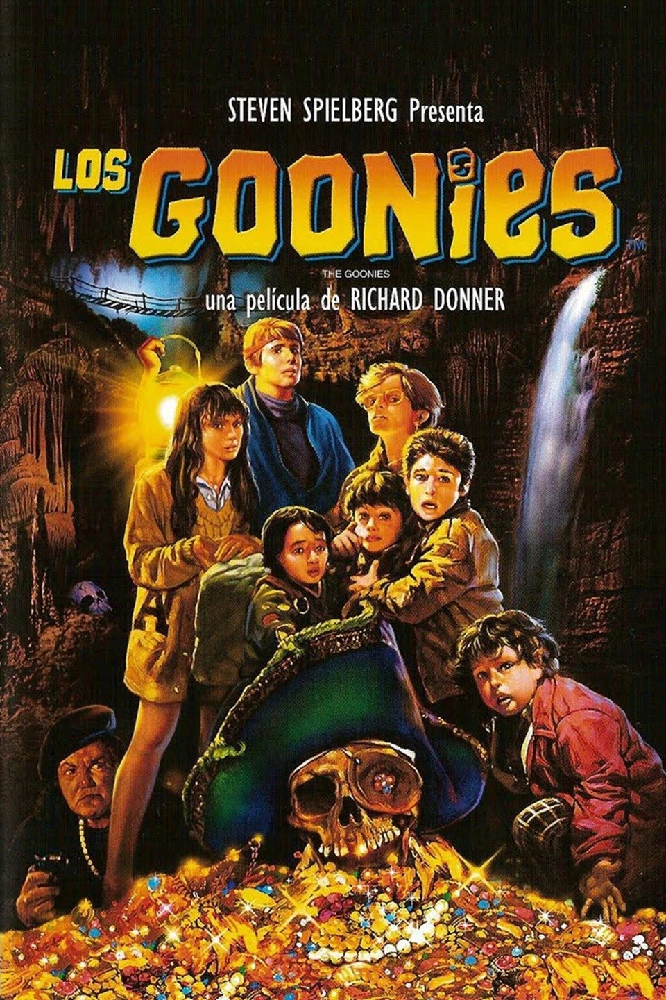
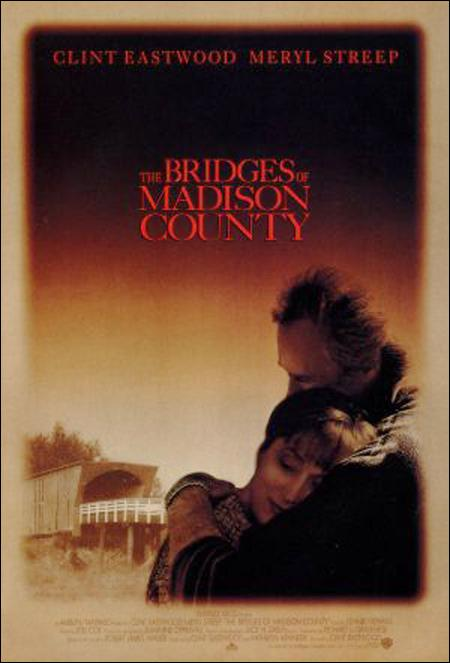

Sobre Mí
Hola, soy Sergio, tengo 50 años y vivo en Lanús. Estoy casado y tengo una hija. Trabajo como empleado administrativo contable desde hace 25 años, un rol donde me siento cómodo aplicando el sentido del orden, la responsabilidad y la prolijidad que siempre me han definido. Aunque soy Analista de Sistemas, mi camino profesional tomó otro rumbo, y hoy combino ambos mundos usando la tecnología para facilitar y mejorar mi trabajo diario.
Proyectos Destacados
Tennis Master
Sistema Web para gestión de canchas de tenis y matcheo de jugadores. Uso de Html, Css, PHP
Club Deportivo
App para gestión de socios, actividades, pagos, etc. de clubes deportivos. Uso de Kotlin.
Mis Habilidades
Tecnologías que Domino
- HTML5
- CSS3 (Flexbox, Grid)
- Php
- C++
Tecnologías que Quiero Aprender
- React
- Python
- Node.js
Hobbies
- Lectura técnica
- Tenis
- Futbol
- Videojuegos
Contacto
Mis Películas Favoritas
Los Goonies
Cuenta la historia de un grupo de amigos que, para salvar sus hogares, siguen un viejo mapa del tesoro que los lleva a vivir una emocionante y peligrosa aventura subterránea. Llena de humor, amistad y acción, es un clásico del cine juvenil de los 80.
Vover al Futuro

Narra la historia de Marty McFly, un adolescente que viaja accidentalmente al año 1955 en una máquina del tiempo construida por el excéntrico Doc Brown. Allí, se encuentra con sus padres cuando eran jóvenes y debe asegurarse de que se enamoren, o corre el riesgo de desaparecer del futuro.
Los Puentes de Madison
Es un drama romántico dirigido y protagonizado por Clint Eastwood, junto a Meryl Streep. La historia gira en torno a un breve pero intenso romance entre una ama de casa y un fotógrafo forastero, que se conocen durante cuatro días en un tranquilo pueblo de Iowa. Es una emotiva reflexión sobre el amor, las decisiones y los sacrificios.